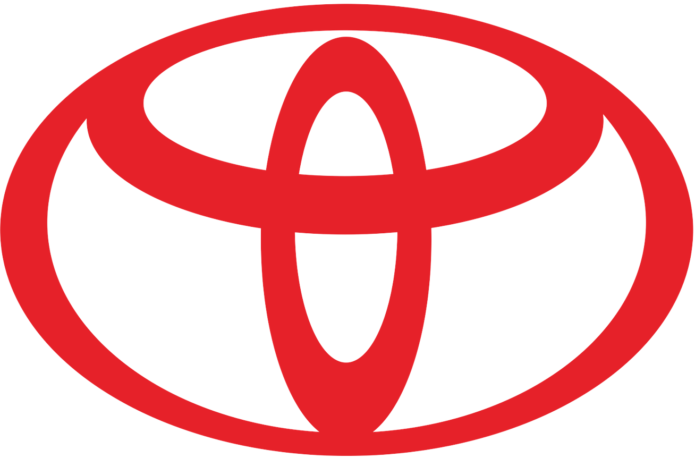

Ford: «Build Ford Tough»
Історія бренду
Ford Motor Company, заснована Генрі Фордом у 1903 році в Детройті, США, стала піонером автомобільної промисловості. Генрі Форд впровадив революційну систему конвеєрного виробництва у 1913 році, що зробило автомобілі доступними для широких мас. Модель Ford Model T, випущена в 1908 році, стала першим автомобілем, доступним середньому класу. Ford також сприяв розвитку глобального автомобільного ринку, відкривши заводи в Європі та інших регіонах. Сьогодні Ford залишається одним із найбільших автовиробників у світі.
Легендарні моделі
Ford GT40 (1966–1969)
Ford GT40 — це легендарний автомобіль, створений для перемоги над Ferrari в гонках 24 години Ле-Мана. Уперше переміг у 1966 році і домінував протягом чотирьох років поспіль (1966–1969). Оснащений потужним 7-літровим двигуном V8, GT40 став символом американської інженерії та наполегливості.
Ford Capri RS2600 (1970)
Ця модель брала участь у різних гонках на витривалість, включаючи Ле-Ман, у класі легкових автомобілів. Завдяки легкому кузову і потужному двигуну V6, Capri RS2600 став популярним вибором для гонщиків у 1970-х роках.
Відгуки
GT40 — це не просто машина, це зброя для війни на трасі. Її швидкість і витривалість — це те, чим пишається кожен, хто її водив.
— Брюс Макларен, гонщик.Capri RS2600 — це авто, яке прощає помилки, але нагороджує сміливість. Їзда на ньому — справжнє задоволення.
— Ганс-Юахім Штук, німецький гонщик.

Toyota: «Always A Better Way»
Історія бренду
Toyota Motor Corporation, заснована Кіїчіро Тойодою у 1937 році в місті Тойота, Японія, стала символом надійності та інновацій в автомобільній індустрії. У 1936 році компанія представила свій перший автомобіль Toyota Model AA, який заклав основи японського автомобілебудування. У післявоєнний період Toyota зосередилася на виробництві економічних автомобілів, що зробило їх популярними у всьому світі. У 1957 році компанія вийшла на американський ринок із моделлю Toyota Crown, а у 1997 році представила Toyota Prius, перший серійний гібридний автомобіль. Сьогодні Toyota є одним із провідних світових автовиробників, відомим завдяки інноваційній системі виробництва та екологічним технологіям.
Легендарні моделі
Toyota 2000GT (1967)
Хоча 2000GT більше відома як спортивний автомобіль, ця модель була адаптована для участі в гонках витривалості. Вона стала першою японською машиною, що серйозно претендувала на місце серед спортивних автомобілів світового рівня.
Toyota Celica 1600GT (1972)
Celica 1600GT брала участь у різних гонках у 1970-х роках, включаючи ралі та витривалість. Вона здобула популярність завдяки своїй надійності та здатності адаптуватися до довгих перегонів.
Відгуки
2000GT — це ідеальний баланс між потужністю та керованістю. Вона змусила світ повірити у японський автоспорт.
— Карролл Шелбі, легендарний конструктор і гонщик.Celica була тією машиною, яка завжди доставляла тебе до фінішу, незалежно від умов. Це авто — про надійність і характер.
— Осаму Кага, японський гонщик.

Bayerische Motoren Werke: «BMW Puts Pleasure Back Into Motoring»
Історія бренду
Bayerische Motoren Werke (BMW), заснована в 1916 році в Мюнхені, Німеччина, починала як виробник авіаційних двигунів. Після Першої світової війни компанія переорієнтувалася на випуск мотоциклів, а згодом і автомобілів. У 1928 році BMW представила свій перший автомобіль Dixi, який швидко здобув популярність. У післявоєнний період компанія відродилася, створюючи преміальні автомобілі, що поєднують інноваційний дизайн і передові технології. Модель BMW 3.0 CSL стала легендою гоночних трас у 1970-х роках. Сьогодні BMW є одним із провідних виробників преміальних автомобілів і символом німецької інженерної досконалості.
Легендарні моделі
BMW 3.0 CSL (1972–1975)
Відомий як "Бетмен" через свою аеродинамічну форму, BMW 3.0 CSL став легендою гонок Ле-Мана і чемпіонату Європи з турингу. Автомобіль мав полегшений кузов і 3-літровий двигун із турбонаддувом.
BMW M1 (1978–1981)
BMW M1 була створена для гоночних серій Procar і Ле-Мана. Оснащена 3.5-літровим рядним двигуном, вона стала першим автомобілем, що поєднав німецьку інженерію і середньомоторну компоновку.
Відгуки
3.0 CSL — це машина, яка приносить адреналін із кожним поворотом. Це найкращий автомобіль для агресивного пілотажу.
— Нікі Лауда, гонщик і чемпіон F1.M1 — це втілення технічної досконалості. Це автомобіль, який змушує тебе працювати на межі своїх можливостей.
— Ганс-Йоахім Штук, пілот.